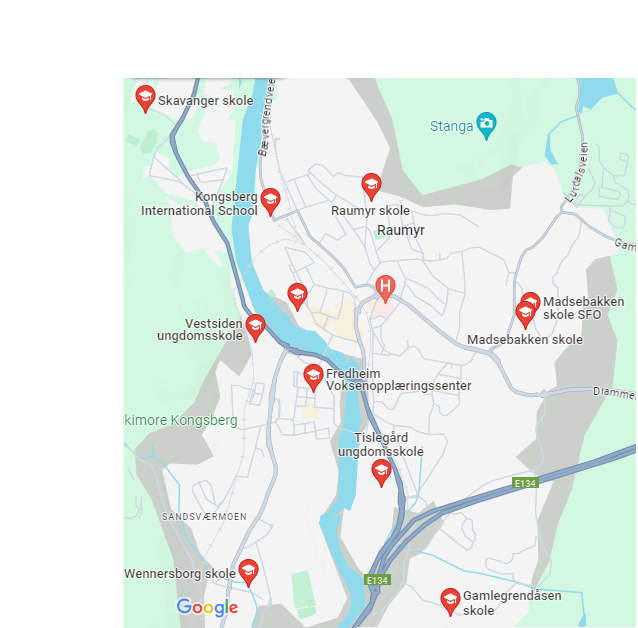

Parks in Kongsberg information
kongsberg is filled with playgrounds and parks. I can guarantee that no matter where you live there is atleast a small one within 200 meter radius. However for this website we decided to only show the biggest ones which are coincidentally all at the schools.
Other parks
Other than these major ones you can find playgrounds at all kindergartens and also just around town. Magasinparken is perhaps the biggest one in Kongsberg sentrum.
